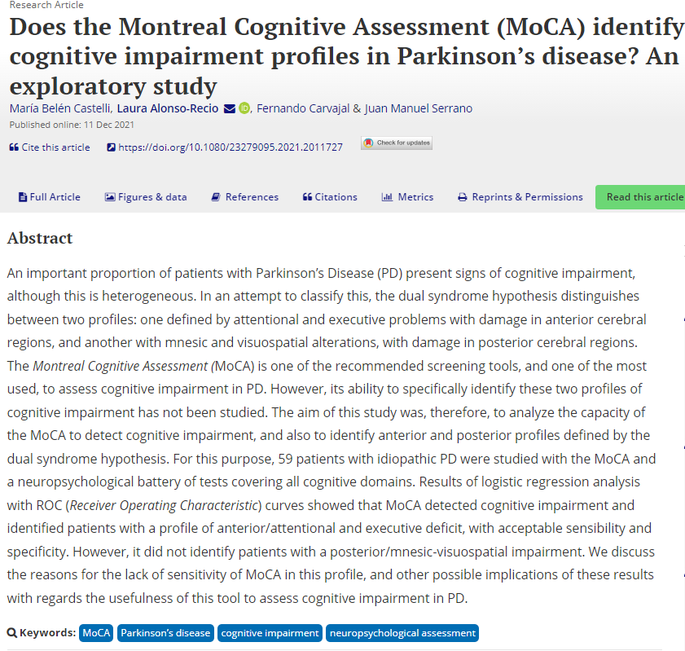

Mis poyectos
Does the Montreal Cognitive Assessment (MoCA) identify cognitive impairment profiles in Parkinson’s disease? An exploratory study
María Belén Castelli, Laura Alonso-Recio, Fernando Carvajal & Juan Manuel Serrano
Proyecto: Maquetación de Codenotch
La maquetación de Codenotch fue un proyecto centrado en la creación de una página web utilizando tecnologías fundamentales como HTML5 y CSS. El objetivo principal fue establecer la estructura básica y el diseño visual de la página, proporcionando una experiencia de usuario agradable y receptiva.
Proyecto: Desarrollo del Juego Simon
El proyecto consistió en la creación del juego Simon utilizando las tecnologías web fundamentales: HTML5, CSS y JavaScript. El juego Simon es un clásico juego de memoria y secuencia que desafía a los jugadores a recordar y repetir patrones de luces y sonidos generados aleatoriamente.
Proyecto: HobbyGames
El proyecto HobbyGames fue un ejercicio avanzado de desarrollo web que utilizó TypeScript y se centró en la implementación de Programación Orientada a Objetos (POO) avanzada.